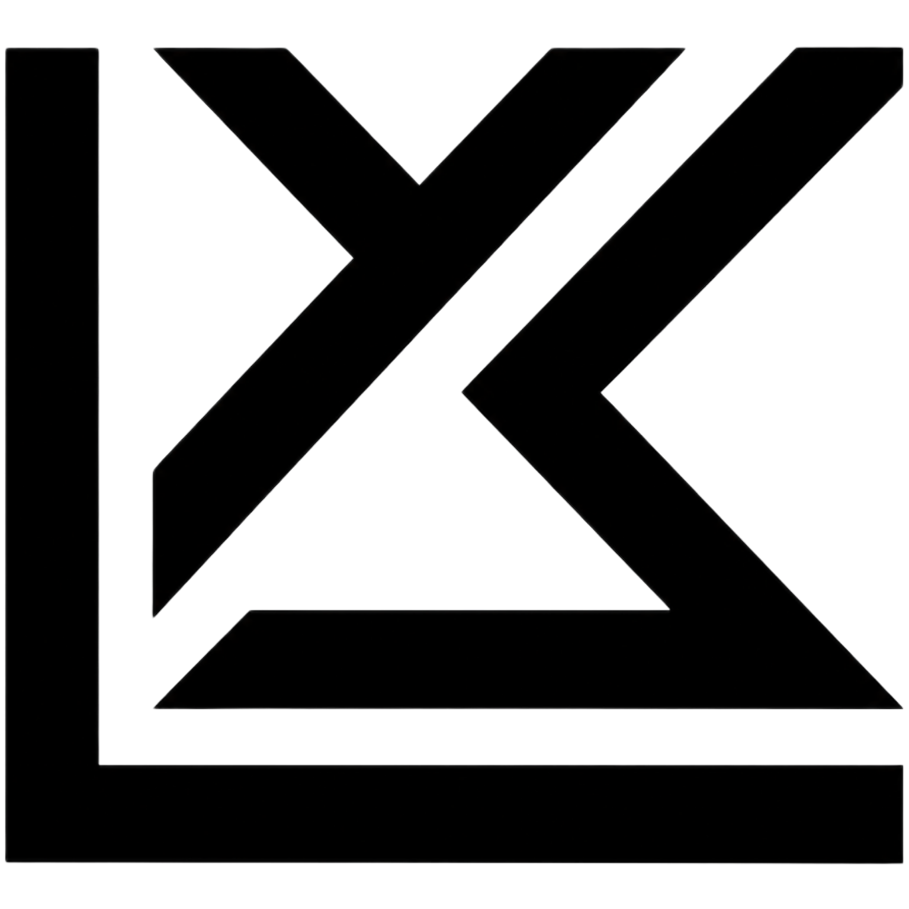

luisro — zsh

$ hola, soy LuisRo
Exploro IA y software. Esto es una ventana, no un escenario.
~/proyectos/lun-ai
abrir ↗
~/proyectos/personal-os
abrir ↗
~/video/tiktok-150k
ver ↗
~/contacto
mail ↗
Opción 11 · ventana amable · fireship/karpathy en claro · tu logo como icono de app